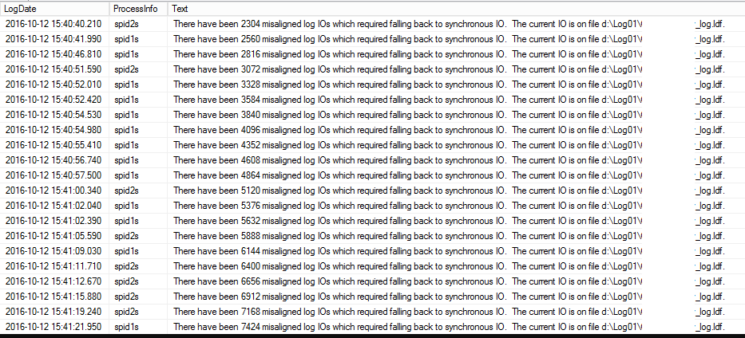
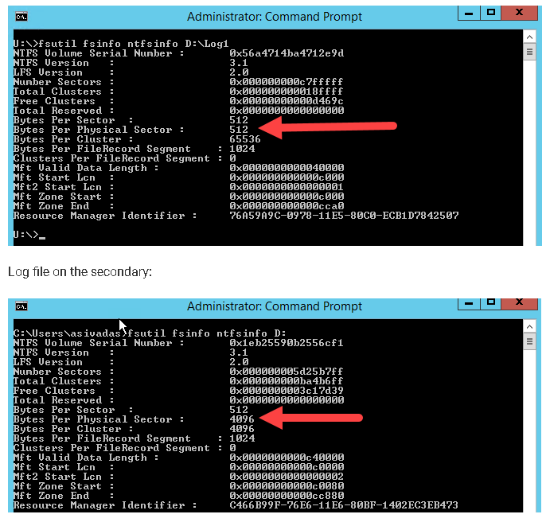

| Troubleshooting |
Causes of Failover
- When having multiple AG database on an AG setup and one of those databases went offline.
- When the Failover Cluster resource went down.
Create Failed for AG

- Either the DNS/IP address already exists on the AD or:
- The object that will create the object in the AD lacks permission.
Unable to create cluster
Sample Error: Create computer object cluster-sql on domain controller \\SVR-AD.eapb.com in organizational unit CN=Computers,DC=eapb,DC=com. A constraint violation occurred.
Fix: User account used to create cluster must be a member of Domain Admins group.
Availability Group DDL operations are permitted only when you are using the master database

Account used to create the AG / perform manual failover must have a default database of master.
Not Synchronizing Database
- Do not reboot.
- Check SQL Error Logs for details - There might be logs pertaining to rollbacks. Percentage of progress can be monitored until AG becomes healthy.
- Try to resume AG - monitor the progress using this script.
- Reboot the secondary node which is not synchronizing then monitor the progress.
- Check if failover is possible - There is a scenario where even if it shows "not synchronizing", it can be failed over with "No Data Loss". Possible that the primary database was not accessible after the problem occurred (ex: Msg 988, Level 14, Unable to access database because it lacks a quorum of nodes for high availability.). Monitor the progress using this script.
ALTER DATABASE <DBName> SET HADR RESUME;
Misaligned IOs
Symptom: - SQL Server Error Log shows below logs.

Cause: - fsutil shows misaligned Physical Sector Bytes.

When disks for primary and secondary are not aligned, then the AG synchronization process can run slow.
Solution: - All the disks involved (specifically log file disks) in an AG configuration should have same sector size (4096 instead of 512).